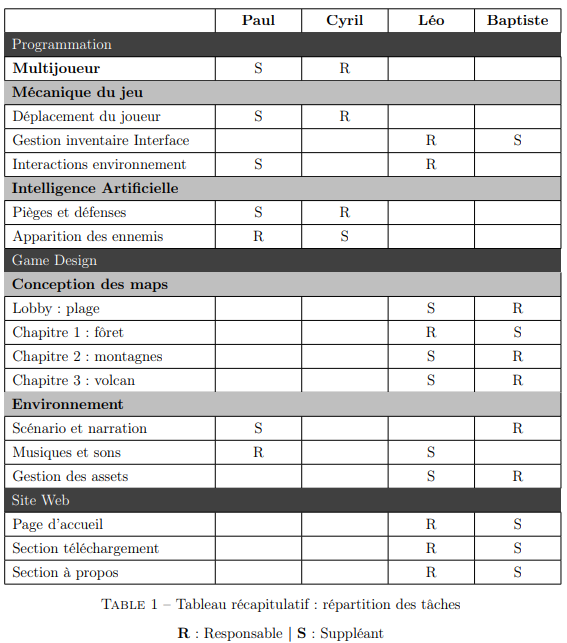
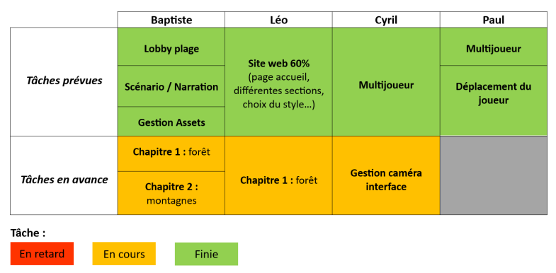

Octobre
Debut du projet, rédaction du cahier des charges, réflexion sur le jeu à travers plusieurs brainstormings lors de nos multiples appels, etc.

Directeur artistique
Debut du projet, rédaction du cahier des charges, réflexion sur le jeu à travers plusieurs brainstormings lors de nos multiples appels, etc.
Les bases du jeu sont clairement définies, que ce soit le style graphique, le type de jeu et la répartition des tâches.
L’équipe perd un de ses membres mais nous ne nous laissons pas abattre et nous répartissons ses tâches. Nous préparons tous ce qui est prévu en vue de la soutenance de mars.
La map du lobby et la narration du jeu est terminé, la première version du multijoueur est opérationnelle et le joueur peut se déplacer et sauter avec les animations correspondantes. Nous avons même pu prendre de l’avance sur la conception des maps, la gestion de la caméra et l’interface.
Les IA des ennemis ont été développées, une refonte du menu pause est effectué pour un meilleur esthétisme, le système de santé du joueur est implémenté avec une barre de vie et un timer est également ajouté. Le système multijoueur est complètement remanié pour obtenir une version plus sécurisée et optimisée. Le sound design est réalisé et un trailer du jeu est monté et intégré au site web.
C'est à ce mois que j'ai initié un repository sur GitHub pour héberger le site web de Treashunt.
PlusJ'ai presque terminé la première version de la page d'accueil entièrement réalisée en HTML/CSS. Cette approche m'a permis d'acquérir une compréhension approfondie des bases du développement web.
Plus
J'ai intégré mon premier effet parallax à la section "À propos" sans l'utilisation de bibliothèques JavaScript externes. Cela a nécessité la mise en place de gestionnaires d'événements et de transitions CSS pour créer un effet de défilement fluide.
PlusJ'ai amélioré la page d'accueil afin de la rendre plus simple et moderne à l'aide de nouveau effet fait en javascript
Plus